To be able to generate those diagram, you must have Graphviz
software installed on your machine in the default directory c:\Program
Files\GraphvizX.XX or /usr/bin/dot.
You can have a look here if you have installed Graphviz somewhere else.
(*) for the starting point and ending point of
the activity diagram.
In some occasion, you may want to use (*top) to force the starting point to be at the top of the diagram.
Use --> for arrows.
@startuml
(*) --> "First Activity"
"First Activity" --> (*)
@enduml
|
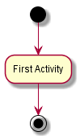 |
By default, an arrow starts at the last used activity.
You can put a label on an arrow using brackets [ and
] just after the arrow definition.
@startuml
(*) --> "First Activity"
-->[You can put also labels] "Second Activity"
--> (*)
@enduml
|
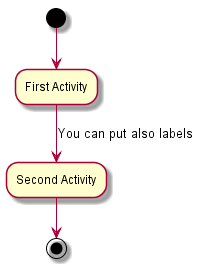 |
-> for horizontal arrows. It is possible to
force arrow's direction using the following syntax:
-down-> (default arrow)-right-> or ->-left->-up->
@startuml
(*) -up-> "First Activity"
-right-> "Second Activity"
--> "Third Activity"
-left-> (*)
@enduml
|
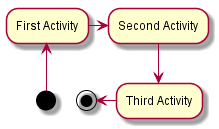 |
if/then/else keywords to define branches.
@startuml
(*) --> "Initialization"
if "Some Test" then
-->[true] "Some Activity"
--> "Another activity"
-right-> (*)
else
->[false] "Something else"
-->[Ending process] (*)
endif
@enduml
|
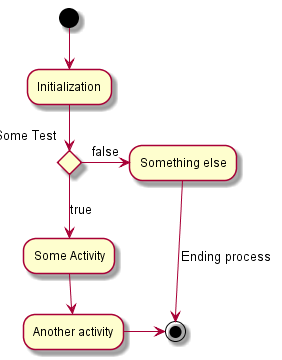 |
@startuml
(*) --> "check input"
If "input is verbose" then
--> [Yes] "turn on verbosity"
--> "run command"
else
--> "run command"
Endif
-->(*)
@enduml
|
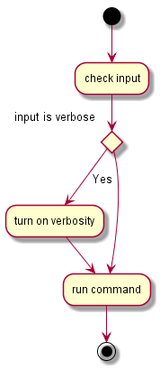 |
if keywords.
It is also possible to nest branches.
@startuml
(*) --> if "Some Test" then
-->[true] "activity 1"
if "" then
-> "activity 3" as a3
else
if "Other test" then
-left-> "activity 5"
else
--> "activity 6"
endif
endif
else
->[false] "activity 2"
endif
a3 --> if "last test" then
--> "activity 7"
else
-> "activity 8"
endif
@enduml
|
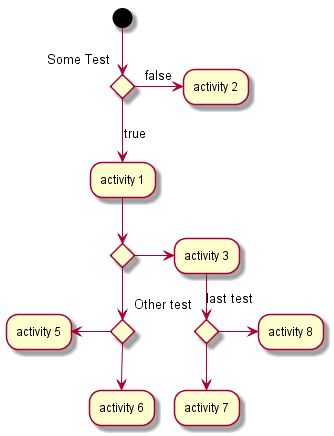 |
=== code === to display synchronization bars.
@startuml (*) --> ===B1=== --> "Parallel Activity 1" --> ===B2=== ===B1=== --> "Parallel Activity 2" --> ===B2=== --> (*) @enduml |
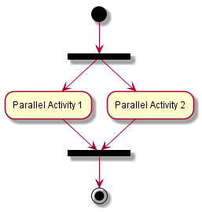 |
\n in the description.
You can also give a short code to the activity with the as
keyword.
This code can be used latter in the diagram description.
@startuml (*) -left-> "this <size:20>activity</size> is <b>very</b> <color:red>long2</color> and defined on several lines that contains many <i>text</i>" as A1 -up-> "Another activity\n on several lines" A1 --> "Short activity <img:sourceforge.jpg>" @enduml |
| 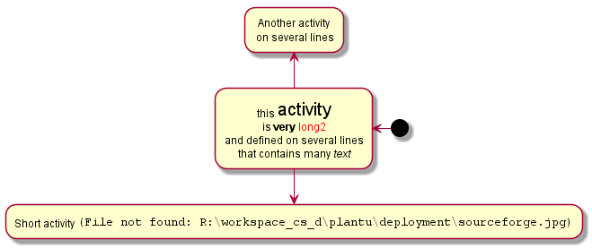 |
note left,
note right, note top or note
bottom,
just after the description of the activity you want to note.
If you want to put a note on the starting point, define the note at the very beginning of the diagram description.
You can also have a note on several lines, using the
endnote keywords.
@startuml
(*) --> "Some Activity"
note right: This activity has to be defined
"Some Activity" --> (*)
note left
This note is on
several lines
end note
@enduml
|
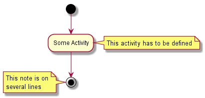 |
partition keyword, and
optionally declare a background color for your partition (Using a html
color code or name)
When you declare activities, they are automatically put in the last used partition.
You can close the partition definition using a closing bracket }.
@startuml
partition Conductor {
(*) --> "Climbs on Platform"
--> === S1 ===
--> Bows
}
partition Audience LightSkyBlue {
=== S1 === --> Applauds
}
partition Conductor {
Bows --> === S2 ===
--> WavesArmes
Applauds --> === S2 ===
}
partition Orchestra #CCCCEE {
WavesArmes --> Introduction
--> "Play music"
}
@enduml
|
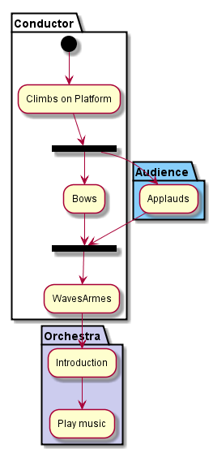 |
title keywords is used to put a title.
You can use title and end title keywords for a longer title, as in sequence diagrams.
@startuml title Simple example\nof title (*) --> "First activity" --> (*) @enduml |
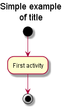 |
skinparam
command to change colors and fonts for the drawing.
You can use this command :
@startuml
skinparam backgroundColor #AAFFFF
skinparam activity {
StartColor red
BarColor SaddleBrown
EndColor Silver
BackgroundColor Peru
BackgroundColor<< Begin >> Olive
BorderColor Peru
FontName Impact
}
(*) --> "Climbs on Platform" << Begin >>
--> === S1 ===
--> Bows
--> === S2 ===
--> WavesArmes
--> (*)
@enduml
|
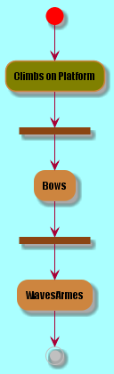 |
skinparam activityShape octagon
command.
@startuml
'Default is skinparam activityShape roundBox
skinparam activityShape octagon
(*) --> "First Activity"
"First Activity" --> (*)
@enduml
|
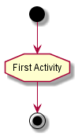 |
@startuml
title Servlet Container
(*) --> "ClickServlet.handleRequest()"
--> "new Page"
if "Page.onSecurityCheck" then
->[true] "Page.onInit()"
if "isForward?" then
->[no] "Process controls"
if "continue processing?" then
-->[yes] ===RENDERING===
else
-->[no] ===REDIRECT_CHECK===
endif
else
-->[yes] ===RENDERING===
endif
if "is Post?" then
-->[yes] "Page.onPost()"
--> "Page.onRender()" as render
--> ===REDIRECT_CHECK===
else
-->[no] "Page.onGet()"
--> render
endif
else
-->[false] ===REDIRECT_CHECK===
endif
if "Do redirect?" then
->[yes] "redirect request"
--> ==BEFORE_DESTROY===
else
if "Do Forward?" then
-left->[yes] "Forward request"
--> ==BEFORE_DESTROY===
else
-right->[no] "Render page template"
--> ==BEFORE_DESTROY===
endif
endif
--> "Page.onDestroy()"
-->(*)
@enduml
|
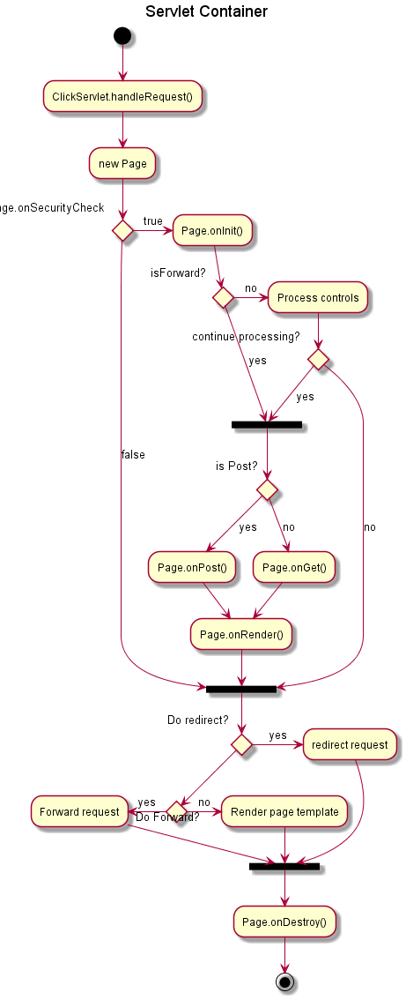 |